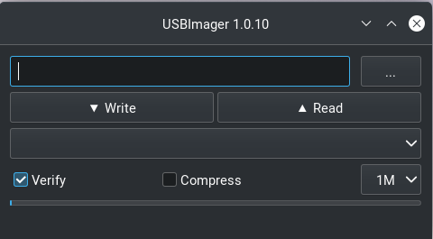

Arch Linux Installation
This section describes a process that can be used to install Arch Linux on a computer system that uses a UEFI based hard drive, which is the most comman type sold in standard Windows and Linux computers. In addition, these instructions assume that the reader has access to a working computer to download some necessary files.
NOTE: This instructions in this section were crafted for a Dell XPS computer that came pre-installed with Ubuntu Linux. Their may be some extra steps not described in this document for someone using a computer that was pre-installed with windows. These steps will occur in the beginning of the process to prepare the computer when in Bios mode prior to installation. The reader of this document should investigate these steps prior to beginning the process as outlined in this document.
Pre-Installation Activities
Before we start the Arch Linux installation we need to download an Arch Linux iso file and flash the distribution to a thumb drive.
Download an ISO file.
Navigate to the Arch Linux directory where you can access the iso files. You should see a screen similar to the one shown below, displaying applicable web sites by country.

Navigate to the section that contains the country you are currently in and click on any of the available web sites. You should get a result like the one shown below.

Find the link that ends with the .iso suffix and has a data associated
with it. In this case it would be the archlinux-2023-09-01-x86_64.iso
file. Click on the link and save it to a thumb drive. Ensure that there
is no other data on your thumb drive. If your thumb drive contains data other
than the .iso file back it up somewhere else, since the flash process
will destroy that data.
Flash the Distribution to a Thumb Drive
Once the iso file has been saved to a thumb drive we need to flash the
distribution to the drive so we can use it as a bootable drive for the
installation process. There are several utility programs that can be used
to transform a thumb drive into a bootable drive, but I prefer to use
USB Imager. The following image
shows an example of the download options in these
USB Imager

Pick the option that is best suited to the computer you are using to the operating system you are using to download and flash the thumb drive. Once you click on an option it should download an installer. Once you have installed USB Imager you should have access to a GUI that looks like the image below.
Ensure that the .iso file is the only file on the thumb drive. Then click
on the three dots in the upper right icon to search for your thumb drive in
the filesystem. Ensure that the verify button is checked, then click on
the Write icon. This will start the process of flashing the .iso to the
flash drive.
Arch Linux Linux Installation
Now that the thumb drive has been flashed with the Arch Linux .iso file,
we are prepared to use it as a mechanism to install Arch Linux on your computer.
Ensure that the computer is powered off, and insert the thumb drive into its interface
with the computer. Also, if possible try to complete this process with a hard
link internet connection in case their are issues with wireless during the
install process.
Boot your computer into the Bios mode by turning the computer on and then repetatively depressing the F12 key. Once booted into Bios mode you should see an option for different boot menus, to include a boot option for your USB drive. Click on this option, and it will boot from the flash drive. This boot option is commonly known as bpooting into live mode. Once booted you should see several options, which may change from version to version; however, you should see an option for the following.
Arch Linux install medium (x86_64, UEFI)
Use the up or down arrow keys to navigate to this option if you are not already hovering on this option. Click enter, and this will enter into the Arch Linux installation process.
NOTE: The instructions listed above may not work for a computer that has a Bios tailored for windows. Ther may be some bios options that you will have to manually change, but these are beyond the scope of this document.
Set up the Keyboard Layout
NOTE: If you are using a keyboard with a U.S. layout, you can skip this step, unless you wish to use a different keyboard layout.
View the keyboard layout options with the following command
ls /usr/share/kbd/keymaps/**/*.map.gzChange the layout with the
loadkeysoption. The following is an example if a user wanted to use thede-latinlayout.loadkeys de-latin
Set Up Wireless
If you have a hard wire connection to the internet, you do not need to complete this section. However, if you intend to use wireless once the distribution is installed, it is recommended that you complete this section.
Check to see if you are currently connected to the internet with the following command.
ip aThe above command should yield a result similar to the following;
1: lo: <LOOPBACK,UP,LOWER_UP> mtu 65536 qdisc noqueue state UNKNOWN group default qlen 1000 link/loopback 00:00:00:00:00:00 brd 00:00:00:00:00:00 inet 127.0.0.x/x scope host lo valid_lft forever preferred_lft forever inet6 ::1/128 scope host valid_lft forever preferred_lft forever 2: wlp0s20f3: <BROADCAST,MULTICAST,UP,LOWER_UP> mtu 1500 qdisc noqueue state UP group default qlen 1000 link/ether fc:44:82:a4:7a:63 brd ff:ff:ff:ff:ff:ff inet xxx.xxx.xx.xx/24 brd xxx.xxx.xx.xxx scope global dynamic noprefixroute wlp0s20f3 valid_lft 69747sec preferred_lft 69747sec inet6 fe80::6cd:4d12:77c7:1c40/64 scope link no
Most likely the output you will receive to the previous step is like the above example. If this is the case, then you will need to enter the
iwctlutility to set up your wireless. If this is the case, you should complete the following steps. If not, and your wireless is connected, you can skip this section.iwctl
Check the device name with the following command.
device listNOTE: In my case the device name is
wlan0, which I will use in place of device name from her on out.Scan for available networks.
station wlan0 scan
Query for the available networks. The previous step is required to determine the list of available networks which are output to the user with this command.
station wlan0 get-networks
If your wireless network does not show up in this list, you may need to troubleshoot your wireless to ensure it is properly transmitting. Assuming your network is in this list you need to enter the following command and replace
NetworkNamewith the name of your network.station wlan0 connect "NetworkName"
This command should lead to a prompt asking you to enter the password for your network.
Exit the
iwctlprompt by simultaneously depressing the Control and d keys (i.e. Control-d).Verify that wireless is working correctly with the following command.
ip aThis should reproduce the output from step 1, but with a slightly different output indicating that wirless is connected. If the output is the same, you may need to repeat the steps in this section starting at step 1.
Assuming the previous step worked correctly, test the connection. This step will ping the google server five times. If this does not return all packets with 0% loss, you may need to repeat the steps in this section
ping -c 5 8.8.8.8
Set Up the Partition Table
In this section we will overwrite the partition table in your computer to one that will accomodate Logical Volume Management (LVM). LVM is not necessary for a personal computer; however, it is very advantageous when setting up a server, and it provides flexibility for resizing memory even on a personal computer. Throughout this section, you can abandon the setup process and still boot back into the operating system originally installed on your computer. However, once you execute the final step in this section, it will wipe your existing OS from memory. If you wish to learn more aboute LVM you can click on the following link for LVM.
NOTE: From this point onwards, the installation instructions may potentially change with each newer version of the Arch Linux installer. The user should consult with the Arch Linux Installation instructions to ensure that the following steps are still valid.
Determine the name for your device with the following command.
fdisk -lThe above command will display a list of all hard drives installed on your computer, to include your thumb drive, which will likely be labelled as
sda. It is very likely that your computer hard drive will be listed asnvme0n1pxwhere thexmay represent a partition. For the rest of these steps I will refer to the hard drive asnvme0napx; however, be sure to replace this with the name of your drive.Enter the partition manager with the following command
fdisk /dev/nvme0n1Start a new gpt partion layout table with the following command;
g
Initialize the first 500 MB partition with the command;
n
This should yield the following questions, where the user should enter the value between quotes to each question.
-Partition number (1-128, default 1): 'press enter to accept default' -First sector (some numbers, default 2048) 'press enter to accept default' -Last sector, +/- sectors or +/- size{K,M,G,T,P} (some numbers, default 1048575966) '+500M'
This should result in the response
Create a new partition 1 of type 'Linux Filesstem' and of size 500 MiB
Set the first partition to be a Linux EFI Partition
t
This should lead to the following prompt
-Partition type or alias (type L to list all):
You can type
Lto list the available types. Type the number associated withEFI Filesystem. As of the date this document was written, this should be option1. When entered correctly, this installer should provide the following response.-Chaged type of partition 'Linux' filesystem to 'EFI System'
Create the second 500 MB partition.
n
This should yield the following questions and user responses in quotes.
-Partition number (2-128, default 2): 'press enter to accept default' -First sector(some numbers, default 1026048): 'press enter to accept the default' -Last sector, +/- sectors or +/- size{K,M,G,T,P} (some numbers, default 1048575966) '+500M'
This should result in the response
Create a new partition 2 of type 'Linux Filesstem' and of size 500 MiB
Unlike the previous partition we will not format this partition and will instead do that at a later time.
Create the 3rd and final partition.
n
This should yield the following prompt and responses listed in quotes.
-Partition number (3-128, default 3): 'press enter to accept the default' -First sector (some numbers, default 2050048): 'press enter to accept the default' -Last sector, +/- sectors or +/- size{K,M,G,T,P} (some numbers, default 1048575966) 'Press Enter to size the partition to the remaining disk space'
Set the final partition type.
t
This should yield the following prompt and responses in quotes.
-Partition number(1-3, default 3): 'press enter to accept the default' -Partition type or alias (type L to list all) '44'
NOTE: As of the date of this document draft, the correct option to the second question is
44; however, this may change. The user should pressLand look for the option that yieldsLinux LVM. If correctly entered this should yield the following response.Change type of partition 3 'Linux Filesystem' to 'Linux LVM'.
Verify the partition layout
p
This should yield something like
Device Start End Sectors Size Type /dev/nvme0n1p1 XXX XXX XXX 500M EFI System /dev/nvm10n1p2 XXX XXX XXX 500M Linux Filesystem /dev/nvme0n1p3 XXX XXX XXX REMG Linux LVM
NOTE: If the output at this step does not show the following partitions, you may need to repeat all steps in this section.
Finalize changes to partition layout. Be warned, that once you execute this step it will delete your current operating system and all saved data.
w
Format partitions. This will format your first partition as a
vfatfile structure and the second asext4.mkfs.fat -F32 /dev/nvme0n1p1 mkfs.ext4 /dev/nvme0n1p2
Set up encryption on the 3rd partition. Click yes when you re asked and be be prepared to enter a password of your choosing. Also, notice this is the first step where we reference our drive by a specific partition.
cryptsetup luksFormat /dev/nvme0n1p3
Unlock the encrypted drive
cryptsetup open --type luks /dev/nvme0n1p3 lvm
Set up LVM with the following commands.
pvcreate --dataalignment 1m /dev/mapper/lvm vgcreate volgroup0 /dev/mapper/lvm lvcreate -L 100GB volgroup0 -n lv_root lvcreate -l 100%FREE volgroup0 -n lv_home modprobe dm_mod vgscan vgchange -ay
NOTE: This should find and activate 2 logical volumes.
Format the logical volumes with the following commands.
mkfs.ext4 /dev/volgroup0/lv_root mount /dev/volgroup0/lv_root /mnt mkdir /mnt/boot mount /dev/nvme0n1p2 /mnt/boot mkfs.ext4 /dev/volgroup0/lv_home mkdir /mnt/home mount /dev/volgroup0/lv_home /mnt/home mkdir /mnt/etc genfstab -U -p /mnt >> /mnt/etc/fstab
Verify that the previous commands correctly set up
fstab.cat /mnt/etc/fstabWhich should yield
/dev/mapper/volgroup0-lv_root UUID=random number / ext4 rw,relatime 0 1 /dev/nvme0n1p2 UUID=random number /boot ext4 rw,relatime 0 2 /dev/mapper/volgroup0-lv_home UUID=random number /home ext4 rw,relatime 0 2
Install Arch Linux
At this point we need to install Arch Linux on our computer.
Install the base packages
pacstrap -i /mnt base
Enter root
arch-chroot /mntInstall Linux
pacmman -S linux linux-headers linux-firmware
NOTE: You can also install linux-lts (long term support), which is a more stable kernel that is not updated as often as the pure linux distribution. However, the Linux foundation recently announced that they will discontinue lts in the near future. If you did decide to install lts in addition, the command would like like the example below.
pacmman -S linux linux-headers linux-lts linux-lts-headers linux-firmware
Install neovim to assist in the editing of configuration files
pacman -S neovim
Install more base packages for wireless internet
pacman base-devel openssh
Enable ssh to ensure it starts when your computer does
systemctl enable sshd
Install networking packages
pacman -S networkmanager wpa_supplicant wireless_tools netctl dialog
Enable the network manager
systemctl enable NetworkManager
Install LVM support
pacman -S lvm2
Make some necessary changes in the
mkinitcpio.conffile.nvim /etc/mkinitcpio.confLook for a line that has the following information in the file.
HOOKS=(base udev autodetect modconf block filesystem keyboard fsck)
Modify the line to read as below and then save
HOOKS=(base udev autodetect modconf block encrypt lvm2 filesystem keyboard fsck)
NOTE: The unmodified line may change from one version to another, button look for the line that is most similar to the original line described in this step.
Type the following command to make the changes to the
mkinitcpio.conffile take effect.mkinitcpio -p linux
NOTE: If you also installed the lts linux kernel the command will look like
mkinitcpio -p linux mkinitcpio -p linux-lts
This command should yield a lengthy output and you should see
[lvm]and[encrypt]in the output.Edit the
local.genfile.nvim /etc/locale.genFind the line that looks like;
#en_US.UTF-8 UTF-8Uncomment the line so it looks like the example below and save the file.
en_UT.UTF-8 UTF-8Activate the changes with the following command.
locale-gen
Set the root password
passwd
Add yourself as a user. Replace myname with your username.
useradd -m -g users -G wheel myname passwd myname
Ensure sudo is installed.
which sudoIf this does not provide a response, you will need to install sudo.
pacman -S sudo
Associate the user with wheel and all privileges
EDITOR=vim visudo
This should enter into the visudo file. Find the line that reads as
#%wheel ALL=(ALL) ALLUncomment this line to look like
%wheel ALL=(ALL) ALL
NOTE: If you are adding a user other than yourself, you may want to specify other privileges in this command.
Install the GRUB Bootloader
At this point, while we do have Linux installed, the computer will still not boot because we have not installed a boot loader. We will use GRUB as the boot loader for our computer.
Install GRUB and related packages.
pacman -S grub efibootmgr dosfstools os-prober mtools
Create the following directory.
mkdir /boot/EFI mount /dev/nvme0n1p1 /boot/EFI
Install GRUB to the master boot record.
grub-install --target=x86_64-efi --bootloader-id=grub_uefi --recheck
Check to see if the locale directory exists.
ls -l /boot/grub/
If it does not exist create it.
mkdir /boot/grub/localeCopy a specifc file from the
/usrtobootdirectories.cp /usr/share/locale/en\@quot/LC_MESSAGES/grub.mo /boot/grub/locale/en.mo
Edit the
grubfile.nvim /etc/default/grubLook for the line that looks like
GRUB_CMDLINE_LINUX_DEFAULT="loglevel=3 quiet"
And change it to look like;
GRUB_CMDLINE_LINUX_DEFAULT="cryptdevice=/dev/nvme0n1p3:volgroup0:allow-discards loglevel=3 quiet"
Generate the GRUB configuration file.
grub-mkconfig -o /boot/grub.cfg
At this point, if we did everything correct we should be able to reboot our hard drive. Lets test our boot configuraiton.
exit umount -a reboot
If all goes well this should reboot our computer and prompt us to enter our username and password, and then boot back into a command line terminal.
Post Install Tweaks
If you made it this far then I am assuming you were able to reboot your computer. Now lets do some post-install tweaks to our OS.
Assume the root user
su cd /root
Create and activate a swap file with the following commands
dd if=/dev/zero of=/swapfile bs=1M count=2048 status=progress chmod 600 /swapfile mkswap /swapfile cp /etc/fstab /etc/fstab.bak echo '/swapfile none swap sw 0 0' | tee -a /etc/fstab cat /etc/fstab
Verify that the previous command is now in the fstab file.
mount -aNOTE: If the prior command causes errors, then something must be fixed.
Activate swap
swapon -a free -m
Check available timezones. For this example I am using
America/Denvertimedatectl list-timezones timedatectl set-timezone America/Denver systemctl enable systemd-timesyncd
Set the host name.
hostnamectl set-hostname yourhostname
Verify the hostname was set up correctly.
cat /etc/hostnameSet hot the hosts file with neovim
nvim /etc/hostsModify the file to look like this
127.0.0.1 localhost ::1 localhost 127.0.1.1 webbmachine.localadmin webbmachine
Install the microcode for your cpu
For intel
pacman -S intel-ucode
For AMD
pacman -S amd-ucode
Install xorg
pacman -S xorg-server
Install the video driver
The steps listed below will also install OpenGL in addition to the drivers.
For intel and AMD.
pacman -S mesa
For NVIDIA
pacman -S nvidia
If you are using an NVIDIA chip with an lts installation you may need to use the following command.
pacman -S nvidia nvidia-lts
For a virtual machine
pacman -S virtualbox-guest-utils xf86-video-vmware systemctl enable vboxservice
Install a Desktop Environment
Now that we have made it this far, we have a fully functioning Linux computer; however, it does not have a graphical desktop environment. Lets fix this shortfall.
If you want to install the Gnome desktop environment, enter the following commands.
sudo pacman -S gnome gnome-tweaks gnome-extra
Then enter the following commands
sudo pacman-key --refresh-keys
systemctl enable gdm
reboot
The rest of this tutorial will assume the use of Gnome; however, you can also install KDE with the following commands.
sudo pacman -S plasma kde-applications
systemctl enable sddm
reboot
If everything goes according to plan you should boot into a graphical desktop environment.